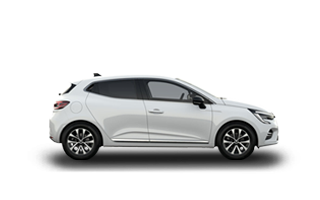

Az életre hangolva
kezdő listaár 6 339 000 Ft|
dizájn városi és vonzó autóÉrzéki vonalak, dinamikus kialakítás, karakteres megjelenés és új full LED fényjegy... A Clio stílusa már az első pillanatban magával ragad. |
 |
AZ EGYEDÜLÁLLÓ VEZETÉSI ÉLMÉNYÉRT A MINDENNAPOKBAN
a Clio-t valódi élmény vezetni.
|
maradjon kapcsolatban a világgal!
Kategóriájában az egyik legnagyobb méretű érintőképernyővel, online navigációval, Google Places - hasznos helyek keresése funkcióval... Az Easy Link rendszerrel a Clio mindig kapcsolatban marad a világgal! |
vezessen könnyedén és gondtalanul!
A gyalogos és kerékpáros érzékelővel is ellátott automatikus vészfékező rendszer segítségével ez az emblematikus városi autó minden pillanatban megvédi Önt, akár a városban, akár vidéki utakon vezet az útja. A Clio a Renault Drive legújabb megoldásait biztosítja, mint például a sávelhagyásra figyelmeztető és sávtartó rendszer vagy a forgalmi és autópálya asszisztens. |
Forras:Renault.hu